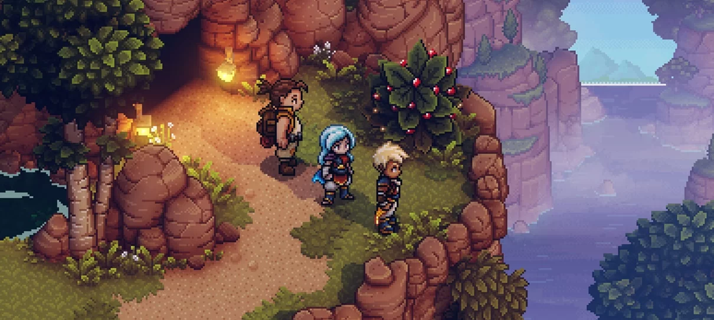

Sea of Stars alcança 5 milhões de jogadores e terá novo modo
NOME AUTOR 30 fev 2024GAMES
30 fev 2024GAMES
Single Player+ permitirá co-op local para até três jogadores
A Sabotage anunciou que Sea of Stars alcançou 5 milhões de jogadores, somando todas as plataformas. Como forma de comemorar a marca, o estúdio anunciou o lançamento do Single Player+, novo modo que trará co-op local para até três jogadores.
O estúdio não divulgou tantos detalhes sobre o co-op, mas afirmou que ele trará uma nova mecânica de acertar o timing dos ataques. Infelizmente, ainda não há previsão para sua chegada ao game.

Lançado em 2023, Sea of Stars é feito pelos mesmos criadores de The Messenger, e foi reconhecido como Jogo Indie do Ano no The Game Awards. A história acompanha Zale e Valere, crianças predestinadas a combater vilões malignos.